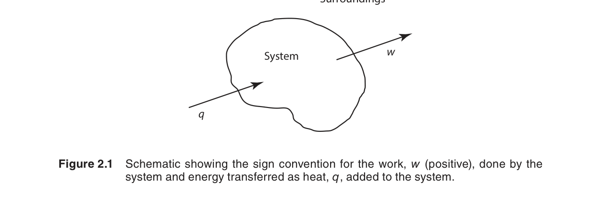
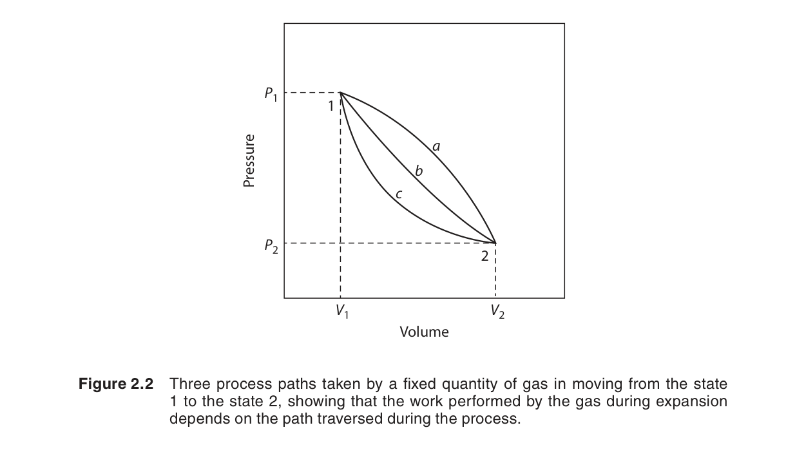
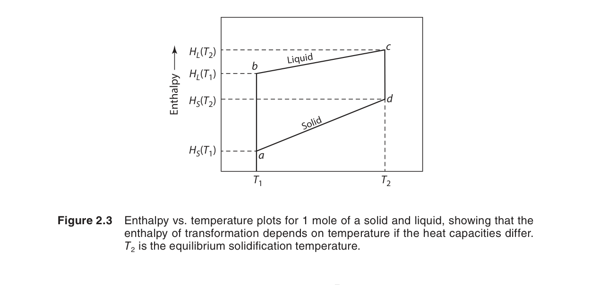
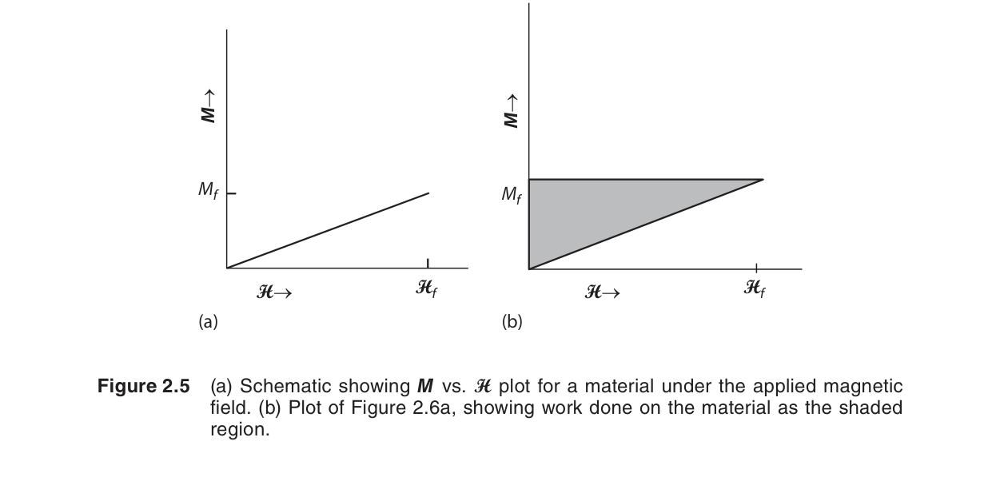

熱力學第一定律
熱力學第一定律是能量守恆定律在熱力學系統中的表述：能量不能被創造或毀滅，只能從一種形式轉換為另一種形式。本章將第一定律精確表述為 $\Delta U = q + w$，並由此推導出焓（enthalpy）和熱容量（heat capacity）兩個關鍵概念。
在本章中，我們將學習：
- 熱 ($q$) 與功 ($w$) 的定義與符號慣例
- 內能 $U$ 作為狀態函數，$\Delta U = q + w$
- 定容過程：$\Delta U = q_V$
- 焓的定義 $H = U + PV$，定壓過程：$\Delta H = q_P$
- 熱容量 $C_V$ 與 $C_P$，理想氣體的 $C_P - C_V = R$
- 可逆絕熱過程：$PV^\gamma = \text{constant}$
- 可逆等溫過程的功：$w = -nRT\ln(V_2/V_1)$
🧭 本章推理地圖
- 已知條件：指定系統邊界、初末狀態與過程限制，例如定容、定壓、絕熱或等溫（§2.1–§2.3）。
- 中間機制：第一定律把熱與功的能量交換轉成狀態函數 $U$ 或 $H$ 的變化（§2.3–§2.5）。
- 可預測結果：利用熱容量與過程方程式計算溫度、壓力、體積、熱量與功（§2.6–§2.8a）。
- 工程用途：分析反應熱、熱處理能量需求、氣體膨脹壓縮與非 $P$–$V$ 功耦合（§2.5、§2.9、Ch11、Ch15）。
章節結構與學習路徑
| 章節 | 主題 | 核心概念 | Gaskell 頁碼 |
|---|---|---|---|
| 2.1 | 導論 | 狀態函數 vs 路徑函數；正合/非正合微分 | p44–46 |
| 2.2 | 熱與功的關係 | 焦耳實驗；熱功當量 $1\ \text{cal} = 4.184\ \text{J}$ | p46–48 |
| 2.3 | 內能與第一定律 | $\Delta U = q + w$；符號慣例；$dU = \delta q - P\,dV$ | p48–50 |
| 2.4 | 定容過程 | $\Delta U = q_V$；彈卡計原理 | p50–51 |
| 2.5 | 定壓過程與焓 | $H = U + PV$；$\Delta H = q_P$；$\Delta H$ vs $\Delta U$ | p51–55 |
| 2.6 | 熱容量 | $C_V$, $C_P$；$C_P - C_V = R$；能量均分定理 | p55–59 |
| 2.7 | 可逆絕熱過程 | $PV^\gamma = \text{constant}$；$\gamma = C_P/C_V$ | p59–63 |
| 2.8 | 可逆等溫過程 | $w = -nRT\ln(V_2/V_1)$；最大功原理 | p63–67 |
| 2.9 | 其他形式的功 | 表面功、磁功、電功、彈性功；$dU = \delta q - P\,dV + \sum Y_i\,dX_i$ | p68–73 |
🔗 交叉參考：本章內容直接服務於第三章（卡諾循環與第二定律）、第五章（基本方程式與 Maxwell 關係）、第八章（真實氣體）、第十一章（反應熱計算）、第十二章（Ellingham 圖）、第十四章（電化學）及第十五章（相變熱力學）。
2.1 導論（Introduction）
熱力學第一定律的核心是能量守恆。在熱力學中，一個系統可以通過兩種方式與外界交換能量：熱（heat, $q$）和功（work, $w$）。系統內能的變化等於這兩者的總和。
要理解第一定律，我們必須先區分兩種物理量：
- 狀態函數（state function）：如內能 $U$、壓力 $P$、溫度 $T$——只取決於系統的當前狀態，與過程路徑無關。
- 路徑函數（path function）：如熱 $q$ 和功 $w$——取決於過程的具體方式。你不能說「系統含有多少熱」，只能說「系統在過程中吸收了多少熱」。
第一定律的學習重點不是背誦公式，而是建立能量帳本：先定義系統邊界，再判斷能量以熱或功的形式穿越邊界，最後把結果歸入內能這個狀態函數。
在材料熱力學中，這套帳本會反覆出現在加熱、冷卻、壓縮、相變與化學反應中。只要邊界與符號慣例不清楚，同一個物理過程就可能被算出相反的熱量或功。
因此，本章會把「狀態量」與「過程量」分開處理。內能、焓與熱容量描述狀態或狀態附近的性質；熱與功則描述過程中發生的能量傳遞。
📝 自編概念例：判斷狀態函數與路徑函數
題目：同一氣體由狀態 A 到狀態 B，$\Delta U$、$q$、$w$ 哪些可能因路徑而不同？
解：$\Delta U$ 是狀態函數，只由 A、B 決定；$q$ 與 $w$ 是路徑函數，會隨加熱、壓縮或膨脹方式改變。
物理意義：第一定律限制總帳必須平衡，但不要求熱與功各自固定。
2.2 熱與功的關係（The Relationship Between Heat and Work）
在熱力學發展的早期，熱和功被視為兩種完全不同的東西。焦耳（Joule）在 1840 年代的經典實驗證明了熱和功是等價的——一定量的功可以產生一定量的熱，反之亦然。這就是熱功當量（mechanical equivalent of heat）。
焦耳的實驗設計是經典力學能量轉換為熱能的完美展示：他將總質量 $m \\approx 26.3\\ \\text{kg}$ 的重物懸掛在滑輪兩側，通過細繩和轉軸帶動浸在水中的槳輪（paddle-wheel）旋轉。重物在重力作用下以恆速下降，釋放的位能 $mgh$ 完全用於驅動槳輪攪拌水體。水的黏滯阻力使機械功轉化為水的內能，引起水溫上升。關鍵參數如下：
- 重物總質量 $m \\approx 26.3\\ \\text{kg}$（每邊各 $\\sim 13\\ \\text{kg}$）
- 下降高度 $h \\approx 1.6\\ \\text{m}$
- 水體質量 $M \\approx 6.36\\ \\text{kg}$
- 重複下降 20 次，總機械功 $\approx 20 \\times mgh \\approx 8.26\\ \\text{kJ}$
- 測得水溫升高 $\\Delta T \\approx 0.31\\ \\text{°F} \\approx 0.172\\ \\text{°C}$
由此計算，產生 $1\\ \\text{cal}$ 熱量所需的功為約 $4.16\\ \\text{J}$，非常接近現代公認值：
這個等價關係是能量守恆的實驗基礎。它意味著熱和功只是能量的兩種傳遞形式，而不是能量本身。焦耳實驗中 $mgh$（機械功）$\approx MC_w\\Delta T$（熱量），這是第一定律最直接的定量驗證。
🔗 交叉參考：焦耳實驗的能量守恆觀點將在第 3 章（熱力學第二定律）關於熱機效率的分析中再次出現——可逆與不可逆過程的功量差異正是第二定律的核心。
📝 自編概念例：熱功當量換算
題目：若攪拌水體輸入 $418.4$ J 機械功，理想絕熱下等價於多少 cal 的熱量？
解：用 $1\ \text{cal}=4.184\ \text{J}$，得到 $418.4/4.184=100$ cal。
物理意義：機械功可轉為內能增加，數值上能用熱量單位表示。
2.3 內能與熱力學第一定律（Internal Energy and the First Law）
一個系統的內能 $U$ 是系統內部所有能量的總和——包括分子的動能、分子間位能、化學鍵能、以及原子核內的能量。在熱力學中，我們通常不需要知道 $U$ 的絕對值，只需要知道內能的變化 $\Delta U$。
熱力學第一定律的數學表述：
或以微分形式：
符號慣例（本書採用）：
- $q > 0$：系統從外界吸熱
- $q < 0$：系統向外界放熱
- $w > 0$：外界對系統做功
- $w < 0$：系統對外界做功
如果系統只做壓力–體積功（最常見的情況），且過程是可逆的：
因此第一定律可寫為：

📝 自編概念例：套用第一定律符號
題目：系統吸收 $500$ J 熱，同時對外做 $200$ J 功，本書符號下 $\Delta U$ 為多少？
解：$q=+500$ J；系統對外做功代表外界對系統做功為負，$w=-200$ J。因此 $\Delta U=q+w=300$ J。
物理意義：能量流入系統的淨額就是內能增加量。
2.4 定容過程（Constant-Volume Processes）
當系統體積保持不變（$dV = 0$），系統不對外做功，外界也不對系統做功（$\delta w = -P\,dV = 0$）。第一定律簡化為：
這就是彈卡計（bomb calorimeter）的原理：在一個固定體積的剛性容器中進行反應，測量釋放的熱量，就等於內能的變化。
重要結論：在定容條件下，系統吸收或釋放的熱等於內能的變化。這是測量 $\\Delta U$ 最直接的方法。
📐 推導 2.1：$\\Delta U = q_V$——定容下熱量等於內能變化
從第一定律的微分形式出發，系統只做 $P$–$V$ 功：
定容條件體積不變，$dV = 0$，因此 $-P\\,dV = 0$：
對兩邊從初態到末態積分：
結論：定容過程中系統吸收的熱 $q_V$ 完全等於內能的增量 $\\Delta U$。這是彈卡計（bomb calorimeter）的理論基礎——在剛性密閉容器中測得的反應熱直接給出 $\\Delta U$。
定容時熱量直接等於 $\Delta U$；但多數材料反應與加熱是在大氣壓下進行，系統可能膨脹或收縮，因此需要另一個狀態函數來吸收 $P\,dV$ 的體積功，這就是下一節的焓 $H$。
📝 自編概念例：定容下的熱量
題目：剛性容器中反應放出 $2.0$ kJ 熱，且只考慮 $P$–$V$ 功，$\Delta U$ 為多少？
解：定容時 $dV=0$，所以 $w=0$。系統放熱 $q_V=-2.0$ kJ，因此 $\Delta U=-2.0$ kJ。
物理意義：定容條件下熱量直接反映內能變化。
2.5 定壓過程與焓（Constant-Pressure Processes and the Enthalpy, $H$）
焓（enthalpy）是熱力學中最重要的狀態函數之一，定義為：
為什麼要定義焓？考慮一個定壓過程。第一定律告訴我們：$dU = \delta q - P\,dV$（只做 $P$–$V$ 功）。在定壓下，$\delta q_P = dU + P\,dV = d(U + PV) = dH$。因此：
在定壓條件下，系統吸收或釋放的熱等於焓的變化。
📐 推導 2.2：$H = U + PV$ 的定義與 $\\Delta H = q_P$
從第一定律微分形式 $dU = \\delta q - P\\,dV$ 出發。在定壓條件下，外壓 $P$ 為常數：
右側可以改寫為全微分的形式。注意到：
在定壓下 $dP = 0$，因此 $d(PV) = P\\,dV$。代入上式：
這啟發我們定義一個新的狀態函數——焓（enthalpy）：
於是：
結論：定壓過程中系統吸收的熱 $q_P$ 等於焓的增量 $\\Delta H$。由於大多數化學反應在大氣壓（定壓）下進行，$\\Delta H$ 比 $\\Delta U$ 更具實用價值。
焓的物理意義：$U$ 是系統的內能，$PV$ 是系統為「騰出空間」對抗外壓所需的功。$H = U + PV$ 是定壓下系統的「總能量內容」——包含內能加上體積功的貢獻。

🔗 交叉參考：焓 $H$ 作為狀態函數的數學基礎——$dH$ 是正合微分（exact differential）——將在第 5 章（Maxwell 關係與基本方程式）中深入討論。定壓熱容量 $C_P = (\\partial H/\\partial T)_P$ 也將在第五章中與 $C_V$ 通過 $\\kappa_T$ 和 $\\alpha$ 建立一般關係。
📝 自編概念例：由內能變換算焓變
題目：理想氣體反應在 300 K 時 $\Delta U=-40.0$ kJ，且 $\Delta n_g=1$，估算 $\Delta H$。
解：$\Delta H=\Delta U+\Delta n_gRT=-40.0+1(8.314)(300)/1000=-37.5$ kJ。
物理意義：生成更多氣體時，定壓熱效應包含額外的膨脹功項。
2.6 熱容量（Heat Capacity）
熱容量（heat capacity）定義為使系統溫度升高 1 度所需的熱量。因為熱是路徑函數，熱容量的值取決於加熱過程的條件：
定容熱容量 $C_V$
定壓熱容量 $C_P$
對於理想氣體，$C_P$ 和 $C_V$ 之間有一個極其重要的關係：
📐 推導 2.3：理想氣體的 $C_P - C_V = R$
從焓的定義出發：
對於理想氣體，$PV = RT$（每莫耳）：
對溫度求偏導（固定壓力）：
根據定義，左側為 $C_P$，右側第一項為 $C_V$：
物理意義：$C_P$ 大於 $C_V$ 的原因是定壓下系統膨脹時對抗外壓做功 $(P\,dV)$，需要額外的熱量來補償這部分功。對於液體和固體，由於體積變化小，$C_P \approx C_V$。
對於理想氣體，$C_V$ 的值取決於分子的自由度，由能量均分定理（equipartition theorem）決定。下表列出了各類氣體的經典預測值：
| 氣體類型 | 自由度 | 每個自由度貢獻 | $C_V$ | $C_P$ | $\gamma = C_P/C_V$ |
|---|---|---|---|---|---|
| 單原子（如 Ar） | 3（平移） | $3 \times \frac{1}{2}R$ | $\frac{3}{2}R$ | $\frac{5}{2}R$ | $\frac{5}{3} \approx 1.67$ |
| 雙原子（如 N₂） | 3 平移 + 2 旋轉 | $5 \times \frac{1}{2}R$ | $\frac{5}{2}R$ | $\frac{7}{2}R$ | $\frac{7}{5} = 1.40$ |
| 多原子非線性 | 3 平移 + 3 旋轉 | $6 \times \frac{1}{2}R$ | $3R$ | $4R$ | $\frac{4}{3} \approx 1.33$ |
能量均分定理的詳細推導（每莫耳）
經典統計力學的能量均分定理指出：每個二次項自由度在熱平衡下平均貢獻 $\frac{1}{2}k_BT$ 的能量（每分子），折合每莫耳 $\frac{1}{2}RT$。
- 平動（translational）：$E_{\text{trans}} = \frac{1}{2}mv_x^2 + \frac{1}{2}mv_y^2 + \frac{1}{2}mv_z^2$ → 3 個自由度 → $C_{V,\text{trans}} = \frac{3}{2}R$
- 轉動（rotational）：雙原子分子 2 個轉動軸 → $E_{\text{rot}} = \frac{1}{2}I_1\omega_1^2 + \frac{1}{2}I_2\omega_2^2$ → 2 個自由度 → $C_{V,\text{rot}} = R$；非線性分子 3 個 → $C_{V,\text{rot}} = \frac{3}{2}R$
- 振動（vibrational）：高溫下每個振動模式貢獻 $R$（動能 + 位能），但室溫下通常被凍結

🔗 交叉參考：第六章將推導愛因斯坦固體模型（$C_V = 3R(\Theta_E/T)^2 e^{\Theta_E/T}/(e^{\Theta_E/T}-1)^2$）和德拜 $T^3$ 定律，詳細解釋 $C_V$ 在低溫下的 $T^3$ 行為。
📝 自編概念例：定容升溫所需熱量
題目：1 mol 理想單原子氣體定容升溫 10 K，若 $C_V=3R/2$，需要多少熱？
解：$q_V=\Delta U=nC_V\Delta T=1(3/2)(8.314)(10)=124.7$ J。
物理意義：定容時熱量完全用來增加內能，不需額外體積功。
2.7 可逆絕熱過程（Reversible Adiabatic Processes）
絕熱過程是指系統與外界沒有熱交換（$q = 0$）的過程。對於可逆絕熱過程，第一定律給出：
對於理想氣體（$dU = C_V\,dT$），代入 $P = RT/V$，經由以下完整推導可以得到可逆絕熱過程的基本方程：
📐 推導 2.4：可逆絕熱過程 $PV^\gamma = \text{constant}$
從第一定律出發，絕熱條件 $\delta q = 0$：
對於理想氣體，$dU = C_V\,dT$，且 $P = RT/V$（每莫耳）：
分離變數：
令 $\gamma = C_P/C_V$，並利用 $R = C_P - C_V = C_V(\gamma - 1)$：
從初態 $(T_1, V_1)$ 到末態 $(T_2, V_2)$ 積分：
因此：
利用理想氣體狀態方程 $PV = RT$ 消去 $T$：
同理，消去 $V$ 可得 $TP^{(1-\gamma)/\gamma} = \text{constant}$。
其中 $\gamma = C_P/C_V$，稱為比熱比（heat capacity ratio）。
🔗 交叉參考：可逆絕熱過程是卡諾循環（Carnot cycle）的兩個關鍵步驟之一。卡諾循環由兩個等溫步驟和兩個絕熱步驟組成——其效率 $\eta = 1 - T_C/T_H$ 是熱力學第二定律的核心，將在第 3 章深入討論。
等效的關係式：
在 $P$–$V$ 圖上，可逆絕熱線比等溫線（$PV = \text{constant}$）更陡峭——因為膨脹時不僅壓力因體積增加而下降，溫度也因絕熱冷卻而下降，進一步降低壓力。

📝 自編概念例：判斷絕熱公式是否可用
題目：理想氣體自由膨脹到真空且容器絕熱，能否用 $PV^\gamma=\text{constant}$？
解：不能。自由膨脹是不可逆過程，雖然 $q=0$，但過程中不經過連續平衡狀態。
物理意義：絕熱不等於可逆；公式的適用條件比「沒有熱交換」更嚴格。
2.8 理想氣體的可逆等溫壓力或體積變化（Reversible Isothermal Changes of an Ideal Gas）
對於理想氣體的等溫過程（$dT = 0$），內能不變：$dU = C_V\,dT = 0$。根據第一定律：
系統吸收的熱全部轉化為對外做的功（反之亦然）。可逆等溫過程的功可以從以下完整推導得到：
📐 推導 2.5：可逆等溫過程的功 $w = -nRT\ln(V_2/V_1)$
對於可逆過程，外壓等於系統壓力：$P_{\text{ext}} = P_{\text{sys}} = P$。因此：
對於理想氣體，$P = nRT/V$。等溫條件下 $T = \text{constant}$：
積分得到：
利用理想氣體狀態方程 $P_1V_1 = P_2V_2$（等溫），可得等價形式：
關鍵觀察：等溫可逆膨脹時 $V_2 > V_1$，$\ln(V_2/V_1) > 0$，$w < 0$（系統對外做功）；壓縮時相反。
📝 自編概念例：等溫可逆膨脹功
題目：1 mol 理想氣體在 300 K 可逆等溫膨脹，$V_2/V_1=2$，求 $w$。
解：$w=-nRT\ln(V_2/V_1)=-(1)(8.314)(300)\ln2=-1.73$ kJ。
物理意義：負號表示系統對外做功；等溫下吸收同量熱以維持 $\Delta U=0$。

2.8a 計算範例：等溫 vs 絕熱壓縮的功量比較
這個例子展示如何運用本章的核心公式計算實際過程的功量，並比較等溫和絕熱兩種不同路徑下的結果。
問題：2 莫耳理想氣體 ($C_V = \frac{5}{2}R$) 在 300 K 下從 $P_1 = 1\ \text{atm}$, $V_1 = 49.2\ \text{L}$ 被壓縮到 $V_2 = 24.6\ \text{L}$。比較以下兩種可逆過程的功：
- 等溫壓縮：溫度保持 300 K
- 絕熱壓縮：系統與外界無熱交換
解：
(a) 等溫可逆壓縮
$\Delta U = 0$，由推導 2.5：
正號表示外界對系統做功。由於 $\Delta U = 0$，$q = -w = -3.46\ \text{kJ}$（系統放熱）。
(b) 絕熱可逆壓縮
$q = 0$，$\Delta U = w$。由 $PV^\gamma = \text{constant}$ 先求末溫。$\gamma = C_P/C_V = \frac{7}{5} = 1.4$。利用 $TV^{\gamma-1} = \text{constant}$：
內能變化：
因此 $w_{\text{adia}} = \Delta U = +3.98\ \text{kJ}$（因為 $q = 0$）。
比較與討論：
- 等溫壓縮需要外界做功 $3.46\ \text{kJ}$，絕熱壓縮需要 $3.98\ \text{kJ}$——絕熱壓縮需要更多的功，因為氣體溫度升高導致壓力更大。
- 等溫壓縮中，系統將 $3.46\ \text{kJ}$ 的功以熱的形式釋放到環境；絕熱壓縮中，全部功轉化為內能增加，氣體溫度升高 $95.8\ \text{K}$。
- 這個比較展示了路徑依賴性：從相同的初態到相同的體積變化，不同過程的功量不同——因為 $w$ 是路徑函數。
- 如果改為不可逆壓縮（瞬間施加外壓），兩種情況的功都會更小——可逆過程給出功的極值。
📝 自編概念例：等溫與絕熱壓縮的方向判斷
題目：同一理想氣體可逆壓縮到較小體積時，絕熱末溫會比等溫末溫高或低？
解：絕熱壓縮沒有熱流出，外界做功使內能增加，因此末溫較高；等溫壓縮則把輸入功以熱排出。
物理意義：路徑限制決定能量是否能離開系統，也決定溫度變化。
2.9 其他形式的功（Other Forms of Work）
壓力–體積功是最常見的功，但不是唯一的。在材料系統中，其他形式的功包括：
| 功的類型 | 表達式 | 應用 |
|---|---|---|
| 表面功 | $\delta w = \gamma\,dA$（$\gamma$ = 表面張力，$A$ = 面積） | 粉末冶金、泡沫材料 |
| 磁功 | $\delta w = \mu_0 H\,dM$ | 磁性材料、磁制冷 |
| 電功 | $\delta w = \mathcal{E}\,dq$（$\mathcal{E}$ = 電動勢） | 電化學電池（第十四章） |
| 彈性功 | $\delta w = \sigma\,d\varepsilon$ | 應力–應變、相變（第十五章） |
一般化的第一定律可以寫成：
其中 $Y_i$ 是廣義力（如表面張力、電場），$X_i$ 是對應的廣義位移（如面積、電荷）。
這種寫法的重點是把能量交換拆成「力」乘上「位移」的形式。壓力對應體積、表面張力對應面積、電動勢對應電荷、應力對應應變；形式不同，但都能進入同一個能量帳本。
各類非 $P$–$V$ 功的實際例子
- 表面功：奈米粒子的熔點降低是表面能效應的經典例子——當粒徑從微米減小到奈米尺度，表面積與體積比急劇增大，表面能的貢獻不可忽略。例如，金的塊體熔點為 1337 K，而 2 nm 金粒子的熔點降至約 600 K。這個現象在第五章的基本方程式中通過 $dU = T\,dS - P\,dV + \gamma\,dA$ 來定量描述。
- 磁功：磁制冷（magnetic refrigeration）利用磁熱效應——施加磁場時磁性材料的磁矩有序化，熵降低，釋放熱量；去除磁場後磁矩無序化，熵增加，吸收熱量。通過 $dU = T\,dS + \mu_0 H\,dM$ 可以分析這個循環的效率。
- 電功：電化學電池（如鋰離子電池、燃料電池）的電動勢 $\mathcal{E}$ 與 Gibbs 自由能變化直接相關：$\Delta G = -nF\mathcal{E}$（第十四章）。在充放電過程中，$dU = T\,dS + \mathcal{E}\,dq$ 描述了內能、熱和電功之間的轉換。
- 彈性功：形狀記憶合金（如 NiTi）的馬氏體相變伴隨著應變能的儲存和釋放。應力誘導的相變可以用 $dU = T\,dS + \sigma\,d\varepsilon$ 來分析。這在第 15 章的相變熱力學中會進一步討論。
📝 自編概念例：辨認廣義力與廣義位移
題目：若材料界面面積增加 $dA$，表面張力為 $\gamma$，對應的功項應如何辨認？
解：表面張力 $\gamma$ 是廣義力，面積 $A$ 是廣義位移，因此表面功可寫成 $\delta w=\gamma dA$，符號依採用慣例決定。
物理意義：建立新表面需要能量，奈米材料與界面現象因此常不能忽略表面功。
🔗 交叉參考：第五章（Maxwell 關係與基本方程式）將把 $dU = T\,dS - P\,dV + \sum Y_i\,dX_i$ 作為熱力學的基本微分式，並推導出各類響應函數之間的關係。第八章（真實氣體）將討論偏離理想氣體行為時 $P$–$V$–$T$ 關係的變化，這直接影響非理想條件下第一定律的計算。
初學者常見錯誤
自我檢測
本節彙整 Gaskell 原著第 74–75 頁的例題圖示及第一章的參考圖，幫助讀者將本章的理論與實際問題聯繫起來。

延伸資源與下一章
本章的內容是後續所有章節的基礎。以下列出與本章直接相關的進階主題及對應章節：
- 可逆過程與最大功原理：可逆過程的功量極值特性是第二定律的核心——第三章將從熵的角度重新解釋為什麼可逆過程的功是最大值（膨脹）或最小值（壓縮）。
- $C_P - C_V$ 的一般關係：對於一般物質（非理想氣體），$C_P - C_V = \alpha^2 V T / \kappa_T$，其中 $\alpha$ 是體膨脹係數，$\kappa_T$ 是等溫壓縮係數。這個關係將在第五章通過 Maxwell 關係推導。
- 熱容量與量子統計：第六章將推導愛因斯坦和德拜的量子熱容模型，解釋為什麼 $C_V$ 在低溫下遵循 $T^3$ 定律而非經典能量均分定理的預測。
- 真實氣體的 $P$–$V$–$T$ 行為：第八章將討論 van der Waals 方程等真實氣體狀態方程，以及偏離理想行為時 $\Delta U$ 和 $\Delta H$ 的計算方法。
- 反應熱與標準焓：第十一章將本章的 $\Delta H = q_P$ 應用於化學反應，引入標準生成焓和赫斯定律（Hess's law），計算反應熱及其溫度依賴性。
- 下一章：熱力學第二定律
關鍵公式總結（Key Formulas Summary）
| 公式 | 名稱/條件 | 備註 |
|---|---|---|
| $\Delta U = q + w$ | 熱力學第一定律 | $U$ 為狀態函數，$q$, $w$ 為路徑函數 |
| $dU = \delta q - P\,dV$ | 只做 $P$–$V$ 功的可逆過程 | $\delta w = -P\,dV$ |
| $\Delta U = q_V$ | 定容過程 | $dV = 0$，彈卡計原理 |
| $H = U + PV$ | 焓的定義 | 狀態函數，任意過程適用 |
| $\Delta H = q_P$ | 定壓過程 | 常壓化學反應熱 = $\Delta H$ |
| $C_V = (\partial U/\partial T)_V$ | 定容熱容量 | 每莫耳或總量 |
| $C_P = (\partial H/\partial T)_P$ | 定壓熱容量 | 每莫耳或總量 |
| $C_P - C_V = R$ | 理想氣體關係 | $C_P > C_V$，因體積功 |
| $PV^\gamma = \text{constant}$ | 可逆絕熱過程 | $\gamma = C_P/C_V$，$q = 0$ |
| $TV^{\gamma-1} = \text{constant}$ | 可逆絕熱（等價） | 與 $PV^\gamma$ 等效 |
| $w = -nRT\ln(V_2/V_1)$ | 可逆等溫膨脹/壓縮 | $dT = 0$, $\Delta U = 0$ |
| $w = -nRT\ln(P_1/P_2)$ | 可逆等溫（等價） | $P_1V_1 = P_2V_2$ |
| $dU = \delta q - P\,dV + \sum Y_i\,dX_i$ | 一般化第一定律 | $Y_i$: 廣義力，$X_i$: 廣義位移 |
本章摘要
- 第一定律（能量守恆）：$\Delta U = q + w$。內能 $U$ 是狀態函數——其變化 $\Delta U$ 只取決於初末態，與路徑無關。熱 $q$ 和功 $w$ 是路徑函數——它們的數值取決於過程的具體方式。數學上，$dU$ 是正合微分（exact differential），$\delta q$ 和 $\delta w$ 是非正合微分（inexact differential）。這個區別是第五章 Maxwell 關係的數學基礎。
- 定容過程（$dV = 0$）：$\Delta U = q_V$。系統不做 $P$–$V$ 功，所有吸收或釋放的熱量完全反映在內能的變化上。彈卡計（bomb calorimeter）利用此原理測量反應的 $\Delta U$。推導 2.1 給出了從第一定律到 $\Delta U = q_V$ 的完整步驟。
- 焓的定義（$H = U + PV$）：定壓過程（$dP = 0$）中 $\Delta H = q_P$。焓是狀態函數，其變化 $\Delta H$ 等於定壓下系統吸收或釋放的熱量。對於理想氣體反應，$\Delta H = \Delta U + \Delta n_g RT$，其中 $\Delta n_g$ 是氣體莫耳數的變化。推導 2.2 展示了 $H$ 如何自然地從 $dU = \delta q - P\,dV$ 定義出來。
- 熱容量：$C_V = (\partial U/\partial T)_V$，$C_P = (\partial H/\partial T)_P$。對於理想氣體：$C_P - C_V = R$（推導 2.3）。$C_P > C_V$ 的原因是定壓加熱時系統膨脹對抗外壓做功。能量均分定理給出單原子氣體 $C_V = \frac{3}{2}R$，雙原子 $C_V = \frac{5}{2}R$，多原子非線性 $C_V = 3R$。低溫下 $C_V$ 的偏離是量子效應（第六章）。
- 可逆絕熱過程（$q = 0$）：$PV^\gamma = \text{constant}$，$\gamma = C_P/C_V$。等價形式 $TV^{\gamma-1} = \text{constant}$ 和 $TP^{(1-\gamma)/\gamma} = \text{constant}$。推導 2.4 從 $dU = -P\,dV$ 出發，通過分離變數和積分得到該關係。$P$–$V$ 圖上絕熱線比等溫線更陡。絕熱過程是卡諾循環的關鍵步驟（第三章）。
- 可逆等溫過程（$dT = 0$）：$w = -nRT\ln(V_2/V_1)$（推導 2.5）。等溫可逆過程的功是最大值（膨脹）或最小值（壓縮）——這是可逆過程的標誌。$\Delta U = 0$，$q = -w$，系統吸收的熱全部轉化為功。等溫不可逆過程的功較小。
- 其他形式的功：表面功（$\gamma\,dA$）、磁功（$\mu_0 H\,dM$）、電功（$\mathcal{E}\,dq$）、彈性功（$\sigma\,d\varepsilon$）。一般化第一定律：$dU = \delta q - P\,dV + \sum Y_i\,dX_i$，其中 $Y_i$ 為廣義力，$X_i$ 為廣義位移。
學習要點與常見迷思
- ⚠️ $w$ 的符號慣例：本書採用 $\Delta U = q + w$（$w > 0$ 表示外界對系統做功）。部分教科書採用 $\Delta U = q - w$（$w > 0$ 表示系統對外做功）。計算時務必確認採用哪種慣例。
- ⚠️ $\Delta U$ 和 $\Delta H$ 的區別：定容下 $\Delta U = q_V$，定壓下 $\Delta H = q_P$。對於固體和液體反應，兩者近似相等；對於含氣體反應，$\Delta H = \Delta U + \Delta n_g RT$。
- ⚠️ 可逆 vs 不可逆：$PV^\gamma = \text{constant}$ 只適用於可逆絕熱過程。不可逆絕熱（如自由膨脹）中 $\Delta U = 0$，$T$ 和 $P$ 的變化不同。
- 🔗 跨章節聯繫：本章推導的 $dU = T\,dS - P\,dV$（加入熵後）是第五章基本方程式的起點。$C_P - C_V$ 的一般關係（透過 $\kappa_T$ 和 $\alpha$ 表達）將在第五章推導。卡諾循環（第三章）由兩個等溫和兩個絕熱步驟構成。